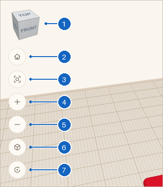
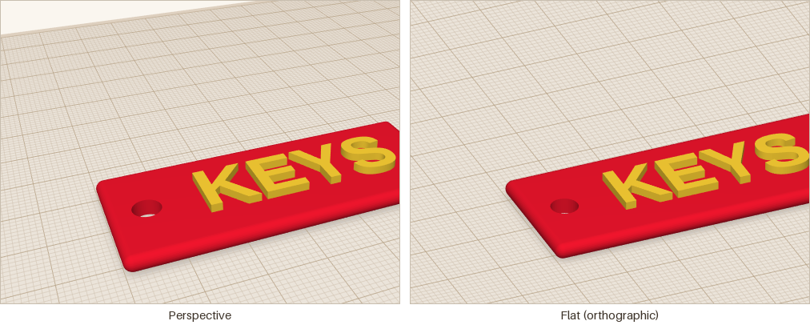
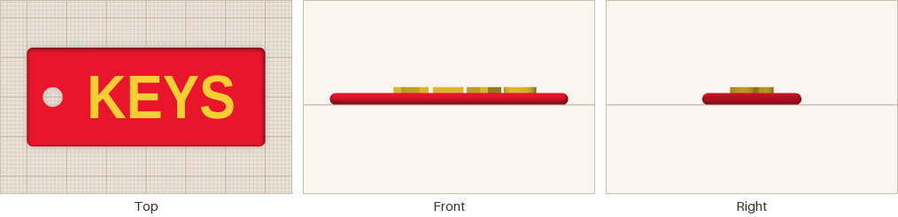
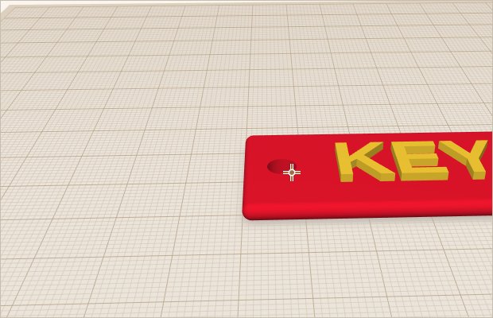

Chapter 2
Looking around
The 3D view shows your design on the build plate. This chapter covers turning, sliding and zooming it. None of it changes the design.
With the mouse
| To | Do this |
|---|---|
| Orbit: turn the view round the design | Drag with the right button |
| Pan: slide the view sideways or up and down | Drag with the middle button, or hold Shift and drag with the right button |
| Zoom | Turn the wheel |
Zooming in goes toward the point under the pointer, so point at what you want to see closer.
The view buttons
The buttons at the top left of the view do the same things, and a few more.

- The view cube shows which way you are looking. Click a face (TOP, FRONT, and so on) to look straight at that side. Drag the cube to orbit.
- Home goes back to the view a new design starts with.
- Fit zooms so the selection fills the view, or the whole design when nothing is selected. Key: F.
- Zoom in. Key: +.
- Zoom out. Key: -.
- Flat or perspective view. See below.
- Center of rotation. See below.
Perspective and flat views
In the perspective view, things farther away look smaller, as they do to the eye. In the flat (orthographic) view they don't: lines that are parallel in the part stay parallel on screen, which makes it easier to judge whether things line up. Click button 6 to switch between them.

The flat view goes well with the view cube. Click a face of the cube and you get a true top, front or side view of the part:

The center of rotation
When you orbit, the view turns round one point: the center of rotation. It starts near the middle of the build plate. If you are working on a detail somewhere else, orbiting swings that detail out of sight.
To turn round the detail instead:
- Click the center of rotation button (7).
- Click the point to turn round: on a shape, on the build plate, or in empty space.
While you orbit, a small cross marks the center:

Home puts the center back where it started. If you would rather not see the marker, turn off Show center of rotation in Settings.
Looking from below
Orbit far enough and you look up at the design from under the build plate. The plate is see-through from below, so you can check the underside of a part.